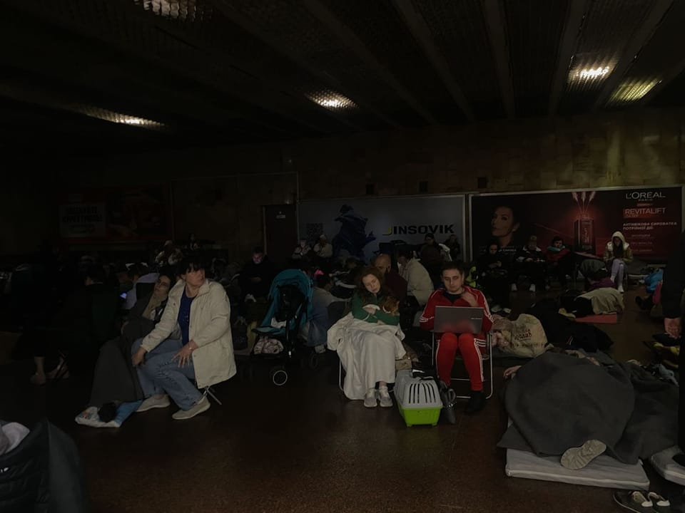

世界苦茶05月25日新闻 | 34条 | 李强开启印尼马来访问

李强开启印尼马来访问 | 台中选会否决废死公投 | X平台陷入故障 | 贝森特预告多份协议将公布 | 基辅连续两天遭遇大规模空袭
每天三件事：
苦茶数据
美元兑人民币：7.17（昨日7.17，前日7.29）
美元兑日元：142.63（昨日143.48，前日143.02）
上证指数：休市（昨日3348，前日3379）
标普500指数：休市（昨日5802，前日5842）
比特币：108092（昨日107828，前日110840）
布伦特原油：64.78（昨日64.02，前日64.29）
中国新闻
• 多账号非法荐股被处置 ：中国官方最新处置一批散布资本市场不实信息、开展非法荐股、炒作虚拟货币交易等的账号、网站。据网信中国微信公众号消息，中国国家网信办星期六通报整治网上金融信息乱象的典型案例。通报称，微博账号“爱股票App”、抖音账号“价值发现者”发布转融通、融资融券有关制度安排等不实信息；“侃哥说财经”等账号通过煽动性或暗示性话语，引导投资者付费加群跟投买入个股、宣扬买某些股票稳赚不赔等，进行非法荐股。
• 李强抵印尼开启访问 ：中国总理李强星期六抵达印度尼西亚首都雅加达，开启印尼访问行程。据新华社英文版报道，李强星期六飞抵雅加达，开始上述访问行程。中国外交部发言人毛宁星期四在例行记者会上宣布，应印尼总统普拉博沃邀请，李强将于5月24日至26日对印尼进行正式访问。应亚细安轮值主席国马来西亚首相安华邀请，李强将于5月26日至28日出席在吉隆坡举行的亚细安—中国—海合会峰会。 （翻评：中国在东盟最大的两个盟友马来西亚、印尼。）
• 信阳干部饮酒案后整顿 ：河南信阳多名干部违规吃喝饮酒一人死亡事件发生后，当地举行专题民主生活会，中共信阳市委书记蔡松涛带头进行个人对照检查。据《信阳日报》消息，信阳市委常委班子星期五召开严禁违规吃喝以案促改专题民主生活会。蔡松涛在会上代表市委常委班子作对照检查，并带头进行个人对照检查，其他常委逐一发言，进行对照检查，开展批评和自我批评。
• 港呼吁吸纳哈佛留学生 ：美国法院暂缓特朗普政府宣布禁止哈佛大学招收国际学生政策，香港教育局局长蔡若莲在社交平台发文，呼吁香港大学吸纳顶尖人才。特朗普政府星期四宣布，禁止哈佛大学招收国际学生，并强制现有外国学生转学。哈佛大学谴责政府的行为违法，并在星期五向波士顿联邦法院起诉特朗普政府。马萨诸塞州联邦地区法院法官巴勒斯签发了临时限制令，冻结了特朗普政府的政策。蔡若莲星期五在脸书发文，欢迎全球优秀学子到香港升学。
• 韩关切中方设黄海禁航区 ：对于中国政府在黄海（韩国称西海）暂定措施水域设立禁航区，韩国表达关切。据路透社报道，韩国外交部星期六表示，韩国已就中国在暂定措施水域设立禁航区一事，向中方表达关切。据美国《新闻周刊》报道，连云港海事局早前发布通告称，禁止船只星期四上午8时至下星期二上午8时进入黄海南部一处指定海域，但未说明设立禁航区的原因。
• 大陆男偷渡金门被捕 ：时隔四天，再有中国大陆男子偷渡金门水域被捕。台湾海洋委员会海巡署星期五在官网通报，海巡署金马澎分署第十二巡防区当天调派第九海巡队PP-10083艇前推大、二胆周边海域巡弋，强化海面目标侦搜管理。上午10时20分，PP-10083艇于大胆西北方0.7海里处海域发现一名中国大陆男子携套游泳圈浮游企图偷渡金门大胆岛，立即将该男逮捕押返料罗港调查。台海巡署称，全案报请金门地检署指挥侦办，依入出国及移民法、两岸条例及要塞堡垒地带法等规定，将处五年以下有期徒刑、拘役或科或并科新台币50万元以下罚金。
• 四川屏山否认欠薪纵火 ：四川屏山四川锦裕纺织有限公司5月20日发生纵火案。对于网传纺织厂克扣、拖欠嫌疑人文某800元工资一事，屏山县公安局23日通报予以否认。通报称，文某办完离职手续要求支付工资时，工厂财务人员同意但要求按规定走流程。文某再次联系主管要求支付工资未果。文某20日在车间纵火并持刀刺伤财务人员。通报还提及，文某因家贫、辍学等原因悲观自闭，辞职是因为产生轻生厌世情绪，想要拿到工资给母亲并计划自杀了结，因未及时拿到工资，用报复企业的方式自我了结。宜宾网警发布推送通报3起与纵火案相关网络谣言，三人分别被处以拘留六日行政处罚、300元罚款，以及教育训诫。
亚太印太新闻
• 台中选会否决废死公投 ：台湾中央选举委员会星期五开会决定，驳回立法院之前通过的反废死公投。国民党主席朱立伦批评绿营封杀民主。分析认为，中选会的决定恐带来重大政治争议。综合台湾《自由时报》《中国时报》《联合报》等报道，台中选会星期五在会上说，反废死公投案并非重大政策，碍难办理公民投票。核三延役公投案则符合规定，将于8月23日投票。对于反废死公投案遭封杀，国民党主席朱立伦表示，民进党有三大主张：台独、废除死刑和废除核电；当立法院通过核电延役，民进党坚持要废除核电；当国民党要透过全民公投来废除死刑，民进党因为害怕与意识形态，把废死公投免除掉，连表达意见的权利都不给民众，民进党真正是台湾民主的杀手，是台湾民主的堕落者，完全跟民意逆风而行。
• 台湾国安简报涉密争议 ：台湾总统赖清德提出向在野党主席进行“重要国安情势简报”后，政治立场亲绿的台媒引述不具名退休国安官员提醒，包括在野党领袖在内的听取简报人员均应列为涉密对象，必须配合赴中国大陆管制规定。据《自由时报》报道，针对赖清德指示国安团队规划向在野党主席进行“重要国安情势简报”，退休国安官员星期六提醒，简报内容若涉及程度不一的机密事项，听取简报的在野党主席或是由其指定陪同人员，均应列为涉密对象并遵守保密规定，必须配合赴中国大陆管制规定。这名未具名的退休官员说，只要是业务上能接触机密的政府人员，或是受邀请听取具有机密等级业务报告的民意代表、在野党领袖或是民间人士，均应遵守保密规定，否则听完国安报告就对外泄露内容的话，情报机制和国安就会有重大危机。
• 台湾第九次世卫碰壁 ：台湾第九年叩关世卫大会失败，总统赖清德强调，为了台湾的健康人权，加入世界卫生组织、参与世卫大会是台湾人民不变的理念，“不会因为没有预算、或是因为美国没有加入而离开”。综合台湾联合报、自由时报报道，赖清德星期六接见“世卫行动团”，他说，很遗憾台湾今年仍未受邀参与世卫大会，加上经费被删了一大笔，“但这并没有改变我们争取台湾健康人权的决心”。此次“世卫行动团”在日内瓦举办超过40场双边会谈、国际论坛及国际记者会等，充分展现台湾争取加入世卫组织的决心。赖清德指出，世卫组织特别强调“不遗漏任何一个人”，但很可惜，却遗漏了台湾2300万人。
• 美AIT称将共守台和平 ：美国在台协会处长谷立言星期六在台北举行的一场论坛上，谈及美国特朗普政府下的美台关系时说，美台未来45年将共同守护和平与繁荣。综合台湾《联合报》《自由时报》报道，台大国安社星期六主办2025青年国家安全论坛，打造跨世代对话平台，探讨特朗普2.0时代下的国防、外交与社会韧性。谷立言在会上致词时指出，美台关系建立在深厚经济连结和共享价值上，并因为人民之间的情谊而历久弥新，横跨美国历届政府、不同党派，始终如一。
• 韩称中黑客长期控系统 ：韩国国家情报院的一份报告称，疑似与中国有关的黑客组织长期控制全球逾2000个电脑系统，457台韩国服务器也遭控制。据韩联社报道，韩国国家情报院国家网络安全中心和电脑杀毒软件开发企业“安博士”，在星期五发布的一份报告中披露上述信息。报告指出，名为“TA-ShadowCricket”的高级持续性威胁组织，从2012年开始进行网络攻击活动。该组织没有采取索取金钱、泄露信息等常见手法，而只是长期保持控制系统的状态，同时尝试随机输入密码侵入系统，在正常程序中植入可远程控制系统的恶意后门代码，诱导用户对运行该程序无所顾忌。
科技新闻
• X平台火灾后再次故障 ：伊隆·马斯克旗下社交媒体平台 X似乎正处于严重故障之中。信息流无法加载，报告显示私信也无法发送。Downdetector显示，报告数量在美国东部时间上午八点后不久开始激增，然后急剧上升，之后开始下降。全球互联网监测机构NetBlocks写道，X一周内第二次出现部分用户的国际故障，并补充说该问题与国家层面的互联网中断或过滤无关。此次问题发生在周四早上 X 位于俄勒冈州的数据中心发生火灾后。火灾涉及数据中心某个房间内的电池。在媒体报道火灾后，有人抱怨 X 出现故障，但当时故障似乎相对较小。
• 马斯克承认X平台宕机 ：社交媒体平台X发生宕机长达两小时，所有者马斯克说他将花更多时间专注于自己的公司。法新社报道，X星期六发生宕机，马斯克后来发文说自己可能离开公司太久了。他说，从本周X系统出现问题可以看出，公司需要进行重大的运营改进。“本应起作用的故障转移机制并未发挥作用。”
• 马斯克宣布回归7x24小时工作状态： 马斯克周六在社交媒体上发帖称，他已经重新回到7x24小时工作的状态，还要睡在会议室、服务器机房或工厂里。马斯克表示：“我必须全神贯注于X/xAI和特斯拉，还有下周的星舰发射，因为我们正推出关键技术。”这也是世界首富本周第二次释放 “淡出政坛” 的信号。在周二出席卡塔尔经济论坛期间，马斯克也表示未来将 “大幅减少” 政治支出，同时强调 “我认为我已经做得够多了”。非常凑巧的是，马斯克2022年斥资买下的社交媒体平台 X 又在周六出现大规模宕机事件。而此前在周四也曾出现短时间宕机，可能与公司租用的俄勒冈州数据中心发生火灾有关。
• 苹果反对德州儿童验证法 ：苹果公司最近几周加大努力反对得克萨斯州的一项立法，该立法将要求这家iPhone制造商核实设备用户的年龄。知情人士称，苹果首席执行官上周致电得州州长艾伯特，要求修改该立法，或者否决该立法。此次通话气氛友好，并清楚表明苹果最高层对阻止该法案有决心。艾伯特尚未表态是否会签署该法案，尽管该法案已在得州议会以足以推翻否决权的多数票获得通过。该法律要求运营应用商店的公司核实设备所有者年龄。如果所有者是未成年人，其应用商店账户必须与家长的账户绑定。当孩子想要下载应用时，家长会收到通知，并且必须批准或拒绝下载。
财经新闻
• 日本米价诈骗激增 ：日本米价飙涨，网上出现越来越多诱骗消费者低价购买白米的诈骗事件。据日本《时事通信社》星期六报道，日本全国消费者事务中心警告消费者提防市面上涌现的诈骗网站，提醒消费者在下单购买时确认经营商的信息无误。中心说，消费者举报有关诈骗案件在3月份开始显著增加，3月和4月累积多达200起。在许多案例中，受害者都是通过社交媒体的广告点击链接，登入诈骗网站。
• 德国GDP增长0.4%创高 ：经价格、季节和工作日调整，德国第一季度国内生产总值环比增长0.4%。该数据为德国经济自2022年第三季度以来的最高季度增速。德国联邦统计局局长鲁特·布兰德星期五发布的声明说，德国3月经济发展形势出乎意料，尤其是制造业生产和出口发展比最初预期要好。专家此前初步预测第一季度德国国内生产总值微增0.2%。根据德国联邦统计局23日公布的最终数据显示，与上一季度相比，2025年第一季度德国私人消费支出增长了0.5%。建筑投资和设备投资也都有所增长。
• 广汽拟在巴西建厂 ：中国广汽集团计划明年第四季在巴西开设造车厂。据路透社报道，广汽集团星期五宣布，将开始在巴西销售新能源汽车，并称旗下的电动汽车和混合动力汽车将获得巴西市场的认可，让他们可在2026年下半年于当地兴建造车厂。广汽集团将从星期六开始在巴西售卖四款电动汽车和一款混动动力汽车。该集团去年宣布，计划未来五年在巴西投资60亿雷亚尔。
• 黄金回升突破3300美元 ：在避险资金需求带动下，金价在美国长周末前重新回到3300美元水平以上。6月份交割的黄金期货本周强力回弹5.3%，收报3357.7美元。随着贸易紧张局势再度升级，市场全面看好接下来的金价走势。上星期五，国际信用评级机构穆迪调降美国信评，引发资金撤离美国债券，涌入黄金。美国总统特朗普在刚过去的星期五再将贸易威胁升级，威胁对智能手机征收至少25%关税，对进口自欧盟的商品征收50%关税，导致股市下挫。
• 美入境旅客预计降8.7% ：数据显示，受美国政府出台“对等关税”等政策影响，预计2025年美国国际入境旅客数量将下降8.7%，其中来自加拿大、墨西哥及西欧国家的旅客降幅较大。英国牛津经济研究院下属的旅游经济学公司日前发布数据预计，2025年抵达美国的国际旅客中，来自加拿大的旅客数量将减少20.2%，来自墨西哥的旅客将减少7.6%，来自西欧国家的旅客减少5.8%。受此影响，国际旅客今年在美国花销将比去年少85亿美元，降幅为4.7%。新华社引述数据说，国际旅客今年5月至7月的赴美机票预订量同比下降10.8%。
• 美财长称多协议将公布 ：美国财政部长贝森特说，美国政府可能在未来几周宣布几个大型贸易协议，他预计美国与一些国家的贸易协议将在对等关税暂缓期限到期前陆续公布。美国总统特朗普宣布的90天对等关税暂缓期将在7月8日到期，现在还剩大约六周时间。贝森特星期五在接受福克斯新闻访问时说：“协议谈判进展迅速，随着90天期限临近，我相信会有越来越多协议公布。许多亚洲国家都提出非常好的条件。”
• 沙特启动全球旅游平台 ：沙特阿拉伯正式启动全球旅游行业综合平台“TOURISE”，旨在打造一个涵盖旅游、科技、投资和创新的综合性国际平台。新华社报道，沙特旅游部长艾哈迈德星期四在一场线上发布会说：“旅游业是世界经济中最具活力和联动效应的力量之一。TOURISE将团结合适的人才，开发创新解决方案，并建立合作伙伴关系，使旅游业更具韧性、联动性和包容性。”据了解，TOURISE平台将通过全年运营的数字合作机制、专题工作组和全球峰会，促进行业交流、技术发布和投资合作。首届TOURISE峰会计划于2025年11月在沙特首都利雅得举行。
• 特朗普威胁征收50%关税后，欧盟呼吁“尊重”： 欧盟贸易专员表示，欧盟27个成员国致力于与美国达成基于“尊重”而非“威胁”的贸易协议。此前，美国总统唐纳德·特朗普威胁将对所有从欧盟输美的商品征收50%的关税。欧盟贸易专员马罗斯·塞夫科维奇在与美国贸易代表杰米森·格里尔和商务部长霍华德·卢特尼克通话后表示：“欧盟全力投入，致力于达成一项对双方都有利的协议。”“欧美贸易无与伦比，必须以相互尊重而非威胁为指导。我们随时准备捍卫自身利益。”周五早些时候，特朗普对正在进行的欧美贸易谈判进展表示不耐烦，并称他已确定将于6月1日提高关税的计划。
俄乌战争
• 乌克兰首都基辅5月24日遭到俄罗斯大规模无人机和导弹袭击，造成6人受伤。袭击还引发2起火灾： 俄乌两国23日进行了“千人”换俘计划中的第一阶段，双方各有390名俘虏被交换。泽连斯基预计周末将继续换俘。乌克兰总统泽连斯基指出，俄军夜间动用无人机与弹道导弹对乌克兰发动大规模袭击，显示莫斯科正阻挠旨在结束战争的停火努力。泽连斯基星期五在社交媒体平台Telegram上写道：“对整个乌克兰来说，这是一个艰难的夜晚。”他写道：“每一次这样的袭击都让世界更加确信，战争拖延的根源在于莫斯科。只有对俄罗斯经济关键部门实施进一步制裁，才能迫使莫斯科同意停火。” （翻评：对基辅的空袭连续两晚了。）
• 俄袭基辅乌俄交换俘虏 ：乌克兰首都基辅5月24日遭到俄罗斯大规模无人机和导弹袭击，造成6人受伤。袭击还引发2起火灾。俄乌两国23日进行了“千人”换俘计划中的第一阶段，双方各有390名俘虏被交换。泽连斯基预计周末将继续换俘。
• 俄军为何在乌克兰“要塞城市”哈尔科夫附近集结： 在将乌克兰军队赶出他们占领了数月之久的俄罗斯库尔斯克地区后，剩余的五万俄军驻扎在哈尔科夫边境对面。分析人士称，一段时间以来，人们一直预计莫斯科军队将沿前线全部或部分地区发起大规模进攻，但尚未完全实现。据信，在天气开始转变、苏联坦克库存可能开始减少之前，俄罗斯有“四个月的窗口期”来突破乌克兰军队的防线。
• 欧盟拟加码制裁俄银行 ：在新一轮制裁措施中，欧洲联盟正在考虑将20多家银行从国际支付系统SWIFT中剔除，同时降低俄罗斯石油价格上限，并禁用北溪天然气管道，以加大对莫斯科的压力，结束对乌克兰战争。彭博社引述知情人士说，欧洲委员会正在就这些计划与成员国磋商。要求匿名的知情人士称，尚未就潜在限制措施的实施时间做出决定。欧盟制裁措施需要所有成员国的支持，且可能在正式提出和通过之前发生变化。欧盟还在考虑对约24家银行实施额外的交易禁令，以及约25亿欧元的新贸易限制，以进一步减少俄罗斯的收入，限制其获取制造武器所需的技术。
其他新闻
• 德国北部城市汉堡中央火车站5月23日发生持刀袭击事件，造成17人受伤，其中4人伤势危及生命，6人重伤： 一名39岁的德国女性在车站被捕。警方认为袭击系单独作战，不认为袭击出于政治动机。
• 禽流感蔓延哺乳动物 ：世界动物卫生组织发布的报告指出，2024年哺乳动物中暴发的禽流感病例数较2023年增长逾一倍，禽流感病毒进一步扩散并传播给人类的风险升高。总部位于巴黎的世界动物卫生组织星期五发布首份《2025年世界动物卫生状况报告》。报告指出，2024年哺乳动物中禽流感疫情的疫点数量达1022个，涉及55个国家，而2023年疫点数量为459个。尽管人类感染禽流感的风险仍较低，但随着越来越多的牛、猫、狗等哺乳动物感染病毒，病毒变得更加适应在哺乳动物之间传播，传染给人类的可能性也随之增加。
• 南非金矿260人脱困 ：南非豪登省金矿重镇韦斯托纳里亚附近的一起矿井事故中，受困的260名矿工已全部安全升井。南非大型贵金属开采企业西班耶－斯提尔沃特公司星期五晚发布声明称，22日位于韦斯托纳里亚附近的克鲁夫（Kloof）金矿七号竖井一台运矿装置在地下39层的装载点意外开门，造成碎石倾泻，波及40层、41层及更深区域，井筒结构因此受损，导致矿工受困井下。中国新闻社引述声明称，事故发生后，矿方完成安全检查和井筒完整性评估，并进行必要修复。受困期间，矿山救援队和医疗团队持续为矿工提供食物和饮用水。
• 美将办兴奋剂运动会 ：美国明年5月将举办一项允许运动员使用兴奋剂的运动会，中国反兴奋剂中心表示坚决反对，并呼吁美国反兴奋剂机构抵制上述赛事的举办。综合法新社和路透社报道，一项名为Enhanced Games的体育赛事将于2026年5月在美国拉斯维加斯举办，涵盖田径、游泳和举重三项运动。这项赛事将允许运动员使用国际体育界所禁用的药物，包括类固醇和生长激素。每项项目的冠军将获得25万美元奖金，若破世界纪录，还将额外获得100万美元。上述赛事由澳洲企业家德苏萨创办，他宣称该运动会旨在探索人类潜能的极限。世界反兴奋剂机构说，这项赛事的构想“危险且极不负责任”，并予以强烈谴责。美国反兴奋剂机构负责人特拉维斯·泰加特也批评，该赛事是一个“拿原则换利润的危险马戏表演”。
• 特朗普大裁国家安全会 ：特朗普正对白宫国家安全委员会进行重大改革，缩小其规模。国安委主要负责在国家安全和外交政策方面为总统提供建议和协助，同时协调各政府机构。此次改革后，国安委的重点将是执行总统计划而非参与决策。预计国防部和国务院今后将在向特朗普提供建议方面发挥更重要的作用，但特朗普最终将“依靠自己的直觉”作出决策。国安委内设部门将裁撤、合并，职能将转移至国务院、国防部等其他部门。消息人士称，原先负责处理非洲事务和处理北约等多边组织事务的部门将被合并。目前约有395人在国安委工作，消息人士称预计最终可能会裁撤至50人左右。被裁人员中有约90人来自其他部门，系政策领域或某项事务的专家。被裁的职业公务员可以选择回到原部门，任命的官员也可以转至其他部门任职。一名白宫官员称，重组国安委的目的还包括清除特朗普政府中的“深层政府”。特朗普认为这些人破坏了其美国优先的议程。此外，与特朗普关系密切的极右翼人士劳拉·卢默直接向他表达了对人员忠诚度的担忧。
• 特朗普签署行政命令以刺激核工业的发展： 美国总统特朗普计划通过周五签署的一系列行政命令，加速推进发展缓慢的核电产业。他概述了多项计划，包括改革美国核能监管机构，加快新项目的许可证审批，增加国内燃料供应，以及将联邦土地用于建设军事反应堆或服务于人工智能的大型数据中心。特朗普在白宫的签字仪式上表示：“现在是发展核能的时候了。”出席该仪式的有能源行业高管，包括Constellation Energy首席执行官约瑟夫·多明格斯以及核能开发商Oklo的负责人雅各布·德维特。一名白宫官员周五在向记者举行的简报会上表示，本届政府预计核反应堆将在特朗普的任期内得到测试和部署。